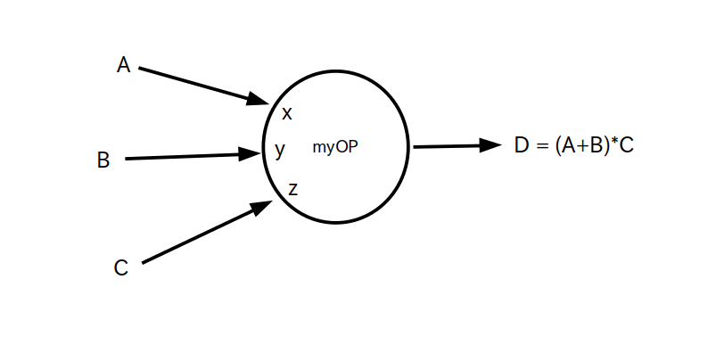

import tensorflow as tf #自作オペレーション : myOP(a,b,c) = (a+b)*c @tf.function def myOP(a, b, c): tmp = tf.math.add( a, b ) return tf.math.multiply( tmp, c ) # (注) # @tf.function # def myOP(a, b, c): # return tf.math.multiply( tf.math.add( a, b ), c ) # # と書いても良いが、分かりにくいので tmp という一時的な使い捨てテンソルを使っています A = tf.constant( [1,2], dtype=tf.float32 ) B = tf.constant( [3,4], dtype=tf.float32 ) C = tf.constant( [5,6], dtype=tf.float32 ) D = myOP(A,B,C) print( D.numpy() ) # 表示結果 # [20. 36.]
myOP 内部のデータフロー・グラフ

全体のデータフロー・グラフ
